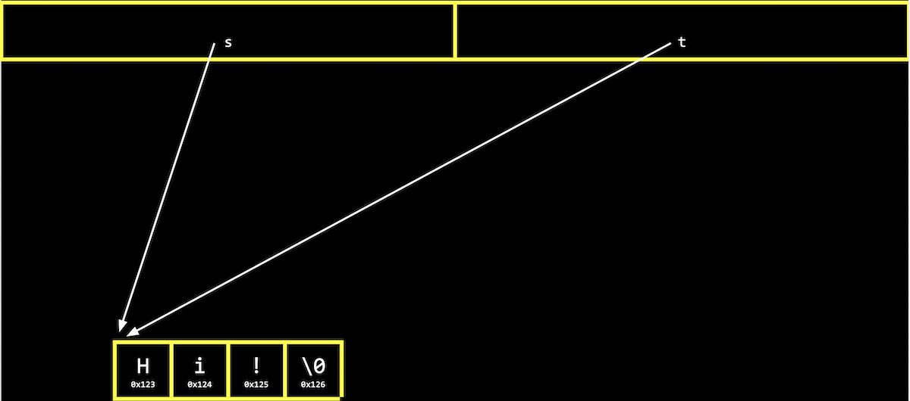
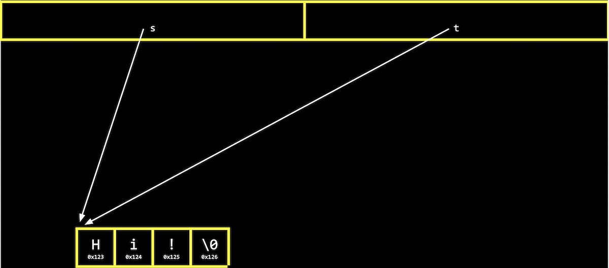

$ valgrind ./memory
==5902== Memcheck, a memory error detector
==5902== Copyright (C) 2002-2017, and GNU GPL'd, by Julian Seward et al.
==5902== Using Valgrind-3.15.0 and LibVEX; rerun with -h for copyright info
==5902== Command: ./memory
==5902==
==5902== Invalid write of size 4
==5902== at 0x401162: main (memory.c:9)
==5902== Address 0x4bd604c is 0 bytes after a block of size 12 alloc'd
==5902== at 0x483B7F3: malloc (in /usr/lib/x86_64-linux-gnu/valgrind/vgpreload_memcheck-amd64-linux.so)
==5902== by 0x401141: main (memory.c:6)
==5902==
==5902==
==5902== HEAP SUMMARY:
==5902== in use at exit: 12 bytes in 1 blocks
==5902== total heap usage: 1 allocs, 0 frees, 12 bytes allocated
==5902==
==5902== 12 bytes in 1 blocks are definitely lost in loss record 1 of 1
==5902== at 0x483B7F3: malloc (in /usr/lib/x86_64-linux-gnu/valgrind/vgpreload_memcheck-amd64-linux.so)
==5902== by 0x401141: main (memory.c:6)
==5902==
==5902== LEAK SUMMARY:
==5902== definitely lost: 12 bytes in 1 blocks
==5902== indirectly lost: 0 bytes in 0 blocks
==5902== possibly lost: 0 bytes in 0 blocks
==5902== still reachable: 0 bytes in 0 blocks
==5902== suppressed: 0 bytes in 0 blocks
==5902==
==5902== For lists of detected and suppressed errors, rerun with: -s
==5902== ERROR SUMMARY: 2 errors from 2 contexts (suppressed: 0 from 0)


![boxes side by side, containing: H labeled s[0], I labeled s[1], ! labeled s[2], \0 labeled s[3]](s_array.png)

 
